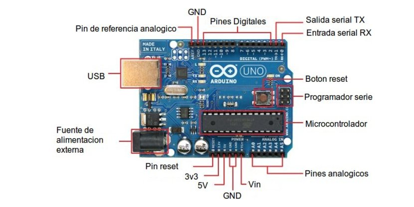
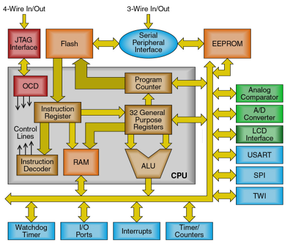

Funcionamiento
Caracteristicas generales:
ATmega328P:
Es un microcontrolador de la firma Atmel y esta basado en la arquitectura AVR. AVR es una arquitectura basada en RISC (Computadora con conjunto de instrucciones reducidas), la arquitectura de un microprocesador o microcontrolador, detalla la estructura interna del mismo y como se conforma la distribución, acceso y control de los diversos bloques que componen al microcontrolador.
Tendremos 3 puertos (B, C y D), donde estos poseen múltiples configuraciones, como por ejemplo el PC4 donde hacemos referencia al puerto C pin numero 4 que aparte de funcionar como una entrada o salida, puede funcionar como un canal multiplexado del ADC (en este caso el canal 4) también funciona como uno de los pines de la interfaz I2C (en este caso el SDA) y también como interrupción (en este caso como PCINT12). Esto nos demuestra que el microcontrolador puede ser configurado de múltiples maneras y puede configurar sus pines de diferentes maneras según su hardware se lo permita, claro que también podremos realizar algunos protocolos por software y asignarlo a pines que no están dedicados, por ejemplo podríamos tener un pin SDA en un pin PB5, que no posee esta propiedad por hardware pero podríamos hacer la trama por software y utilizarlo, lo que no podremos hacer es usar este PB5 como un canal ADC ya que es una propiedad intrínseca del microcontrolador.